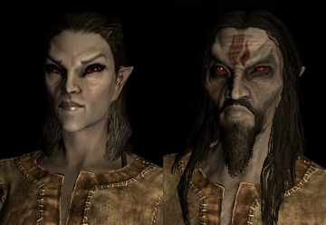
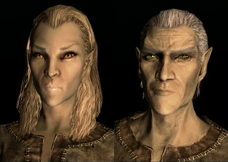
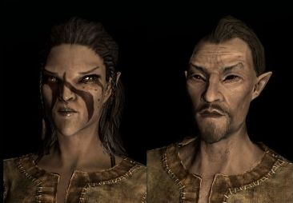
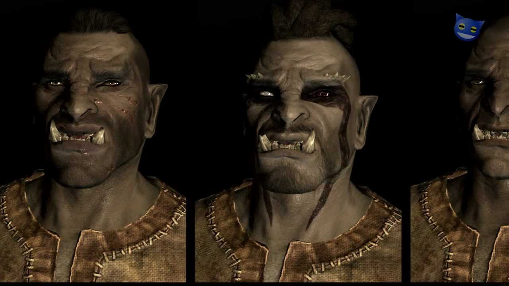
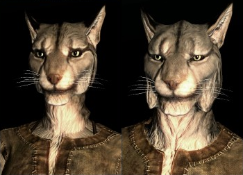
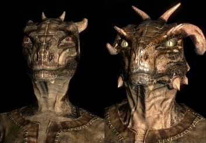
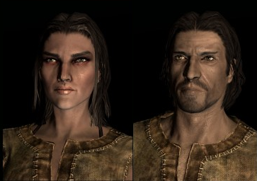
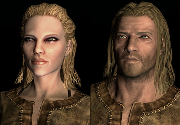
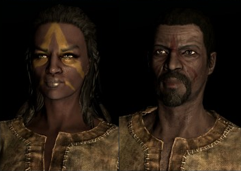
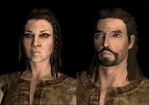

Raças
Dunmer

Dunmer, ou Elfos Negros (Dark Elves), são parentes dos Alto Elfos, porém sua pele é acinzentada e seus olhos vermelhos. Seres nativos de Morrowind,
província conhecida por seu clima quente e o maior vulcão de todo o continente de Tamriel. Os Elfos Negros são conhecidos por, além de serem parcialmente resistentes ao fogo, são bons com magias de destruição, lâminas de uma mão, armaduras leves e com a habilidade de esgueirar-se.
- Ancestrais da Ira: Pode ser usado uma vez por dia e dura 60 segundos, os oponentes que estão pertos recebem 8 pontos de dano de fogo por segundo.
- Resistência ao Fogo: O sangue de Dunmer garante 50% de resistência a fogo.
Altmer

Altmer, ou Alto Elfos (High Elves), são elfos de pele dourada, e olhos claros, julgam-se melhores em força e em inteligência que qualquer outra raça.São nativos da ilha de Summerset, onde possuem grandes escolas de magia. Esses elfos são conhecidos por terem aptidão para todo tipo de magia, seja ela ilusão, destruição, conjuração, alteração, restauração ou até mesmo a arte de encantar objetos.
- Highborn: Regenera Magicka rapidamente por 60 segundos. Pode ser usado uma vez por dia, como nos jogos anteriores.
- Fortificar Magicka: Magia passiva onde a magicka é aumentada em 50 pontos.
Bosmer

Bosmer, ou Elfos da Floresta, são elfos parecidos com os Altmer, porém sua pele é mais parecida com a dos humanos, e seus olhos são quase sempre castanhos ou negros.São nativos das terra de Valenwood, e são conhecidos por suas habilidades com o arco, armaduras leves, alquimia e arrombamento, além de, como os Dunmer, a habilidade de esgueirar-se.
-
Comandar Animais: Torne os animais em sua volta aliados por 60 segundos.
-
Resiste a Doenças e Poções: O sangue de Bosmer concede 50% de resistência a veneno e a doenças.
Orc

Orc, ou Orsimer, são parentes distantes dos Altos Elfos, mudados para essa forma após serem amaldiçoados junto de Malacath, príncipe Daedra regente dessa raça.Os orcs são conhecidos por sua bravura em batalha, suas habilidades com armaduras pesadas, espadas, machados, e martelos, não importa o tamanho, sejam grandes ou comuns. Provenientes do Reino de Orsinium, essa raça sofreu preconceito durante anos, por serem considerados bárbaros, porém foram aceitos após um tratado entre Orsinum e o Império.
-
Raiva Perseguidora: Você recebe metade do dano de inimigos e inflige o dobro do seu dano por 60 segundos.
Khajiit

Os Khajiit são um povo de felinos humanoides, vindos das florestas e desertos de Elsweyr, onde são divididos em diversas tribos.A aparência do Khajiit, a cor de seus pelos depende da fase das duas luas de Nirn. Suas garras permitem que os Khajiit causem muito dano em combates com os punhos, além de sua pericia nas habilidades de esgueirar-se, arrombamento, criação de poções,a arte de roubar, uso de arcos e de armas leves, como uma adaga.
-
Olho-Noturno - Permite enxergar no escuro por 60 segundos.
-
Ataque de Garras - Ataques sem armas equipadas dão 15 de damage.
Argonians

A raça de lagartos humanoides nativos de Black Marsh, são seres esguios e rápidos, conhecidos por sua habilidade de respirar debaixo d'água, além da resistência à doenças, ambas as habilidades provenientes de diversas gerações de Argonians que viviam nos pântanos selvagens de Black Marsh. Diferente das outras raças, os Argonians são capazes de adaptar-se às diferentes situações, tornando-os poderosos combatentes de guerrilha. São habilidosos em esgueirar-se sem serem vistos, em usar armaduras leves e em arrombar fechaduras, além das artes mágicas de restauração e alteração.
-
Histskin - Invoca o poder de hist para recuperar o HP 10 vezes mais rápido por 60 segundos.
-
Resistência à Doenças - O sangue de Argonian tem 50% de resistência a doenças.
-
Respirar na Água - Os pulmões de Argonian podem respirar de baixo d'água.
Imperiais

Guerreiros e diplomatas natos, os imperiais são o povo de Cyrodiil, sede do Império e da Torre de Ouro-Branco, na Cidade Imperial.Os imperiais são muito orgulhosos de sua história, marcada por várias batalhas e vitórias.Imperiais nascem com um talento nato nas artes de armas como lâminas e maças, em usarem armaduras pesadas, o uso do escudo, e de magias de cura, além de terem certa facilidade em encantar itens.
-
Voz do Imperador: Acalma pessoas próximas por 60 segundos.
-
Sorte Imperiaç: Os Imperials podem encontrar um pouco mais de septims coins.
Nords

O povo de Skyrim, os Nords, são um povo unido e forte, com seu próprio rei. Os Nórdicos são conhecidos por sua ferocidade e lealdade em batalha, por viverem nas terras ao norte, seus corpos são mais resistentes ao frio.São bravos guerreiros, bons com qualquer tipo de arma branca, porém com preferencia à armas de corte, como espada simples ou claymores, são bons com armaduras leves, assim como nas artes de forja e em se socializar com os outros.
-
Grito de Batalha: Seus inimigos irão fugir por 60 segundos .
-
Resistência ao Gelo: O sangue de nórdico garante 50% de resistência ao frio.
Redguard

Redguards tem suas origens no continente de Yokuda, que hoje está submerso, portanto eles vieram à Tamriel, firmando-se na província de Hammerfell, e viajando para outras províncias. São guerreiros natos, mestres na arte de armas brancas, bons em armaduras pesadas e forja de itens, assim como o uso do escudo além de saberem usar o arco.
]
-
Aumento de Adrenaline: Energia regenera 10 vezes mais rápida por 60 segundos.
-
Resistência à Veneno: O sangue de Redguard garante 50% de resistência a veneno.
Breton

Bretons são os nativos de High Rock, conhecidos por terem resistência à magias. São magos excelentes, já que nascem com mais afinidade à magia defensiva, Bretões tem mais facilidade em usar magias de restauração, alteração, ilusão e principalmente conjuração. Também possuem afinidade em alquimia, além de serem bons em se socializar.
-
Dragonskin: Absorvem 50% da magicka de spells inimigas por 60 segundos.
-
Resistência: O sangue de Bretão garante 25% de resistência a magias.